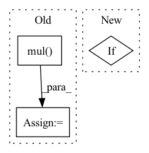

Pattern ID :2259

Before Change
def forward(self, x):
self.conv1.weight.data = torch.mul(self.conv1.weight, self.mask1.weight)
self.conv2.weight.data = torch.mul(self.conv2.weight, self.mask2.weight)
out = F.relu(self.bn1(self.conv1(x)))
out = self.bn2(self.conv2(out))
out += self.shortcut(x)
After Change
out = self.conv2(out)
out = self.bn2(out)
if self.downsample is not None:
identity = self.downsample(x)
out += identity
out = self.relu(out)
In pattern: SUPERPATTERN
Frequency: 3
Non-data size: 3
Instances
Fragment ID: 7912188
Project Name: incheon-cho/dynamic_model_pruning_with_feedback
Commit Name: 12bd228dc14e0c422c262bcbc1b81cb435e05a4d
Time: 2020-09-06
Author: dlscjs5362@gmail.com
File Name: models/resnet.py
M Class Name: BasicBlock
N Class Name: BasicBlock
M Method Name: forward(2)
N Method Name: forward(2)
M Parent Class: nn.Module
N Parent Class: nn.Module
M File Name: models/resnet.py
N File Name: models/resnet.py
M Start Line: 48
M End Line: 54
N Start Line: 43
N End Line: 56
'>
Before Change
text_latents, image_latents = map(lambda t: F.normalize(t, p = 2, dim = -1), (text_latents, image_latents))
labels = torch.arange(input.size(0), device = image_latents.device)
sim_i_2_t = torch.matmul(torch.mul(logit_scale, image_latents), torch.t(text_latents))
sim_t_2_i = torch.matmul(torch.mul(logit_scale, text_latents), torch.t(image_latents))
loss_t_2_i = F.cross_entropy(sim_t_2_i, labels)
loss_i_2_t = F.cross_entropy(sim_i_2_t, labels)
After Change
sim_i_2_t = torch.matmul(torch.mul(logit_scale, image_latents), torch.t(text_latents))
sim_t_2_i = sim_i_2_t.t() //torch.matmul(torch.mul(logit_scale, text_latents), torch.t(image_latents))
if return_loss:
assert image.size(0) == input.size(0), "Not Support for unbalanced image-text pair"
loss_t_2_i = F.cross_entropy(sim_t_2_i, torch.arange(input.size(0), device = image_latents.device))
loss_i_2_t = F.cross_entropy(sim_i_2_t, torch.arange(image.size(0), device = image_latents.device))
return sim_i_2_t, sim_t_2_i, loss_i_2_t, loss_t_2_i
'>
Fragment ID: 7912190
Project Name: weiyx16/clip-pytorch
Commit Name: 6cd0a84a4b3df54d9b248294556800a0ec49c09d
Time: 2021-01-08
Author: weason1998@gmail.com
File Name: CLIP.py
M Class Name: CLIP
N Class Name: CLIP
M Method Name: forward(4)
N Method Name: forward(3)
M Parent Class: nn.Module
N Parent Class: nn.Module
M File Name: CLIP.py
N File Name: CLIP.py
M Start Line: 241
M End Line: 254
N Start Line: 252
N End Line: 268
'>
Before Change
def forward(self, x):
self.conv1.weight.data = torch.mul(self.conv1.weight, self.mask1.weight)
self.conv2.weight.data = torch.mul(self.conv2.weight, self.mask2.weight)
self.conv3.weight.data = torch.mul(self.conv3.weight, self.mask3.weight)
out = F.relu(self.bn1(self.conv1(x)))
out = F.relu(self.bn2(self.conv2(out)))
After Change
out = self.conv3(out)
out = self.bn3(out)
if self.downsample is not None:
identity = self.downsample(x)
out += identity
out = self.relu(out)
'>
Fragment ID: 7912193
Project Name: incheon-cho/dynamic_model_pruning_with_feedback
Commit Name: 12bd228dc14e0c422c262bcbc1b81cb435e05a4d
Time: 2020-09-06
Author: dlscjs5362@gmail.com
File Name: models/resnet.py
M Class Name: Bottleneck
N Class Name: Bottleneck
M Method Name: forward(2)
N Method Name: forward(2)
M Parent Class: nn.Module
N Parent Class: nn.Module
M File Name: models/resnet.py
N File Name: models/resnet.py
M Start Line: 89
M End Line: 97
N Start Line: 83
N End Line: 100